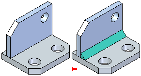

Fillet Weld command
Constructs a fillet weld between two sets of faces you select. For best results, the first set of faces should be perpendicular to, or nearly perpendicular to the second set of faces. A fillet weld feature is placed using the Weld Beads color.

Extracting weld symbol information onto the drawing
When defining weld features in an assembly, you can also use the Fillet Weld Options dialog box to define the settings you want for the weld symbol on the drawing. You can define single operation weld symbols, or compound operation weld symbols. When you set the Tie to Geometry option on the Weld Symbol command bar in the Draft environment, you can extract the weld symbol information onto the drawing.
You can specify whether weld symbols conform to the ANSI/ISO/DIN standard or the GOST standard using the Drawing Standards tab in the Solid Edge Options dialog box.
How do I
Construct a fillet weldConstruct a stitch weld
Construct a groove weld
Label a weld
Insert a weldment in an Assembly
Create a Weldment Assembly
Learn more
WeldmentsCreating drawings of weldment assemblies
Look up more details
Fillet Weld command barFillet Weld Options dialog box
Groove Weld command
Groove Weld command bar
Groove Weld Options dialog box
Label Weld command
Label Weld command bar
Label Weld Options dialog box
Stitch Weld command
Stitch Weld command bar
Stitch Weld Options Dialog Box
Insert Weldment command
Insert Weldment command bar
Weldment Parameters dialog box
Weldment Assembly command
Weldment Assembly Dialog Box
Weldment File Type dialog box